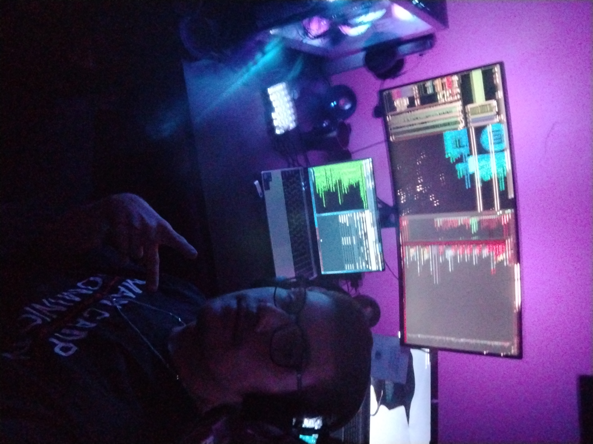

Building modern websites for small businesses, professionals, and growing brands.

Hi, I'm CJ, founder of CJ'S Web Solutions.
I grew up in Haughton, Louisiana. In school, I often did the bare minimum. It wasn’t because I couldn’t do the work; I just had a hard time connecting with subjects that didn’t interest me. When something does capture my attention, though, I’m willing to put in the work to learn it. As you can see this site is proof of that. I still remember a counselor and my mom going through my backpack and finding assignments I had completed but never turned in. I couldn’t explain why I did that then, and honestly, I still can’t. But I also remember the first time I felt proud of something I could do: helping with the computers in my special education class. I think I was there from second through fourth grade. Our teacher, Miss Purdum—I’m not sure I have the spelling right—cared deeply about her students and worked hard to help us succeed. I’ve never been able to find her to thank her, so if she ever sees this: thank you. P.S. My spelling still needs work. As I got older, I spent a lot of time pretending to be a hacker by opening Command Prompt and acting like I knew what I was doing. Discovering Ctrl+U and seeing a website’s source code felt like finding a secret door. That curiosity stayed with me. In eleventh grade, I attended the Youth Challenge Program, a military-style program that felt like a chance to get my life back on track. Our computers were limited to schoolwork, but I found my way past the restrictions and onto YouTube and Google. For a few days during a six-month stretch away from my family, it gave me a small reminder of home. I got caught, and I was sure I’d be sent home. Instead, they wanted to know how I’d done it. Looking back, that experience says a lot about me: I’ve always been curious about how things work. Today, I’m in recovery and approaching two years of sobriety as I write this page. Creating things—especially through technology—has brought me a kind of happiness I didn’t expect. My faith in Jesus Christ has also become an important part of my life. I’m still learning to give myself grace for past mistakes and to keep growing one day at a time. I’m grateful to the people who have guided me, believed in me, and helped me become a better man. I hope the things I build can reflect some of the care they’ve shown me.
What started as a childhood fascination with computers has grown into my own business, and I’m just getting started. I build websites, but I’m also studying cybersecurity: learning how attacks work, how to defend against them, and how to help people stay safer online. I’m building tools for students, too, including an app to make it easier to track their cybersecurity learning journey. The biggest lesson I’ve learned is that I don’t know everything—and that’s okay. Read, listen, keep learning, and don’t give up on your dream. You’ve got this.
Clean, modern websites that look great on both desktop and mobile devices.
Quality websites at prices that make sense for small businesses and startups.
Ongoing maintenance and support to keep your website running smoothly.
Whether you're starting a new business or improving your existing one, CJ'S Web Solutions is here to help.
Contact Me